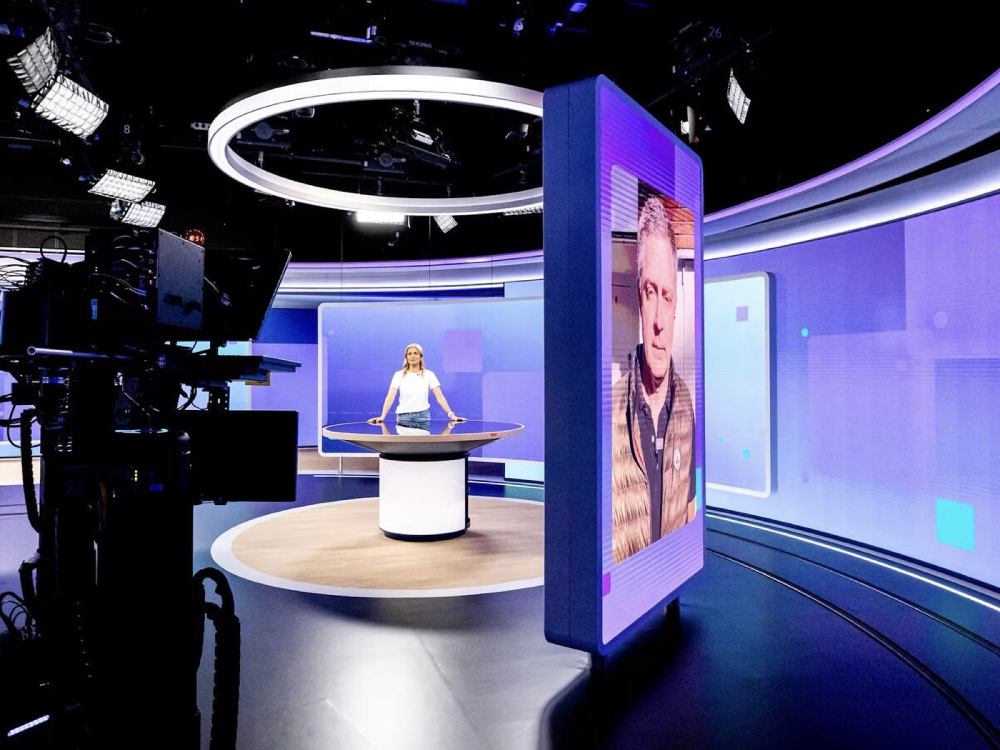
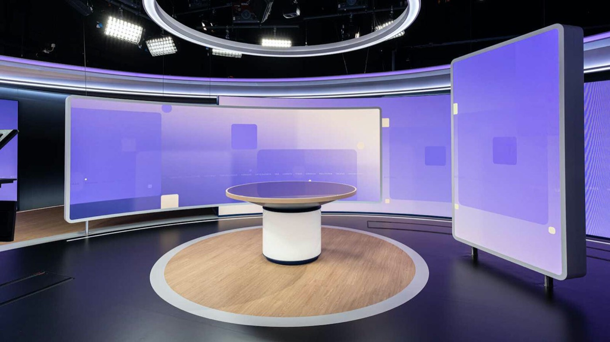
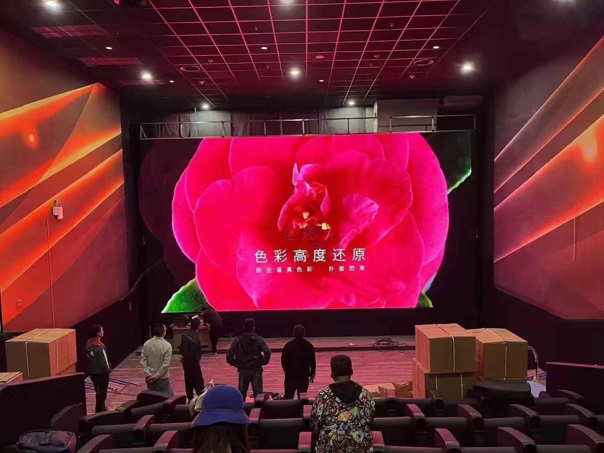

By David
How do you set the led display viewing distance for a room? The industry rule of thumb is that the minimum comfortable viewing distance in metres is roughly the pixel pitch in millimetres multiplied by one to one and a half, so a P2.5 screen reads well from about 2.5 to 4 metres. To choose a pitch, start from the depth of the room and the closest seat, not from the largest screen the budget allows.
Viewing distance is the first decision in any LED display project, because it decides the pixel pitch. A screen watched from up close needs a finer pitch than one watched from across a hall. Get the distance wrong and the image shows pixels; get it right and the image looks smooth at every seat.
This guide is written for integrators, contractors, and end owners who need a practical answer to one question: from how far should this screen be viewed, and what pitch does that imply? It gives the industry rules of thumb, a decision table, and the questions to settle before you buy.
LED display viewing distance is the distance from which the audience watches the screen. It is not one number but a range: a minimum distance, below which the pixels become visible, and a maximum, beyond which the image is too small or too dim to read comfortably.
The pitch, the resolution, and the content all interact with the distance. A viewer at one metre sees individual LEDs on a coarse screen; a viewer at thirty metres cannot resolve them on the same screen. The distance decides which pitch is comfortable and which is wasteful.
The industry uses a rough rule of thumb: the minimum comfortable viewing distance in metres is about the pixel pitch in millimetres multiplied by one to one and a half. A P2.5 screen is therefore comfortable from roughly 2.5 to 4 metres, a P4 screen from about 4 to 6 metres, and a P10 outdoor screen from about 10 to 15 metres.
This is a rule of thumb, not our own data and not an exact figure. Different manufacturers quote different multiples, and the comfortable distance depends on the content and the eye. Treat it as a starting point for a conversation, not a number you can hold anyone to. Always confirm the real result with a sample or a mock-up at the actual distance.
| Room Depth / Closest Seat | Typical Viewing Distance | Pitch to Consider |
|---|---|---|
| Up to 3 m | 1 to 3 m | P1.2 to P1.9 fine pitch |
| 3 to 5 m | 2 to 4 m | P1.9 to P2.5 |
| 5 to 8 m | 3 to 6 m | P2.5 to P4 |
| 8 to 15 m | 6 to 12 m | P4 to P6 |
| 15 to 30 m | 10 to 20 m | P6 to P10 |
| Over 30 m | 20 m plus | P10 and coarser |
The table is a starting point, built from the same rule of thumb, and it assumes typical content and light. A room with fine text or a sharp-eyed front row may want the finer pitch; a room showing video can often accept the coarser one. Use it to shortlist, then confirm.
The minimum viewing distance is where individual pixels stop being visible as separate dots and the image reads as one picture. Sit closer than this and the eye resolves the LEDs, so the picture looks grainy. This is the number that decides how close the front row can be.
For a room where the front row is fixed, the minimum distance sets a ceiling on the pitch. If the closest seat is two metres away, a coarse pitch will look pixelated there, and a finer pitch is the only way to keep the front row comfortable. The minimum distance, in other words, protects the closest viewer.
Beyond the minimum there is a comfortable range, where the image looks smooth and the whole screen fits the field of view. The best viewing distance is usually further back again, where the screen fills a comfortable angle without the viewer having to scan from edge to edge.
A useful second rule of thumb is that a viewer sits at roughly one and a half to three times the screen height for a comfortable view of the whole image. This, again, is a general guide rather than a fixed rule, and it changes with the content and the shape of the space.
Pixel pitch is the centre-to-centre spacing of the LEDs, measured in millimetres. It sets the resolution per area and, with it, the viewing distance. A smaller pitch packs more pixels into the same space, so the screen stays smooth from closer. A larger pitch spreads the pixels, so the audience must sit further back.
The link is direct: halve the pitch and the minimum comfortable distance roughly halves. That is why a fine pitch screen such as a COB P0.93 panel is chosen for boardrooms and control rooms where people sit only two or three metres away, while a P10 screen serves a roadside. For a closer look at fine pitch options, see our fine pitch selection guide.
The led wall viewing angle is how far to the side a viewer can sit and still see a bright, colour-correct image. An LED screen holds its brightness across a wide angle, but the colour and the contrast fall off towards the edges. A viewer far to the side sees a dimmer, duller picture.
For a room with seats to the side, the horizontal viewing angle decides the layout. A display with a wide angle keeps the side seats usable; a narrow one pushes the audience towards the centre. Confirm the horizontal and vertical angles, not only the head-on brightness, before you fix the layout.
The practical method is to start from the room, not the screen. Measure the closest seat and the farthest seat, and note the angle most viewers sit at. The closest seat sets the finest pitch you can justify; the farthest seat sets how much detail the content needs to carry.

A deep hall with seats spread over twenty metres needs a pitch that suits the front row without making the screen enormous. A shallow boardroom with everyone close needs a very fine pitch. Room depth, in other words, is the real specification, and the pitch follows from it.
The content changes the comfortable distance. Text and data need a finer pitch, because the eye reads letters and numbers closely and pixel edges show on characters. Video and large graphics are more forgiving, because motion and gradation hide the pixel structure.
A control room showing charts and tables needs a finer pitch than a lobby showing video. The rule of thumb still applies, but the content pushes it in one direction or the other. When in doubt, choose the finer pitch for the content that demands the most.
For close viewing the pitch must be fine, and the panel technology matters. COB, chip on board, packages the LEDs directly on the board, which protects them and gives a smoother surface for fine pitch. SMD and GOB are the other common options, each with its own trade-offs for close viewing and durability.

Asia Vision supports SMD, GOB, and COB, and our COB P0.93 has reached mass-production capability, which suits control rooms and boardrooms where viewers sit close. We run 8 IC production lines and 7 LED SMT production lines alongside our own cabinet customisation, ageing tests, QC, and export delivery. You can see the COB range, including the COB CV Pro series, on our product pages.
An led screen viewing distance calculator turns the rule of thumb into a quick estimate. You enter the pitch and the distance, and it returns the minimum distance and the visible pixel size. It is a convenient way to compare pitches before you talk to a supplier.
Treat the calculator as a guide, not a verdict. It usually assumes a sharp eye and ideal content, so real rooms often want a finer pitch than the calculator suggests. Use it to narrow the options, then confirm with a sample at the real distance.
A control room is watched closely, so it needs a fine pitch and a fast refresh. A lobby or a mall screen is watched from a range of distances, so a mid pitch with a wide angle works. An outdoor screen is watched from far away, so a coarse pitch is enough and the brightness matters more.
A stadium or an arena is watched from very far and from steep angles, so a coarse pitch and a wide angle serve it. The room type, the content, and the audience geometry together decide the pitch. For a room with operators at close range, our control room buying guide goes deeper.
The common mistakes are choosing the pitch from the budget instead of the room, ignoring the closest seat, and forgetting the side seats. Another is trusting a single number for viewing distance when the real room has a range of distances and angles.
The remedy is to measure the room first, set the finest pitch from the closest seat, and check the content at the farthest seat. Then confirm the angle for the side seats. Each step removes a surprise before the installation begins.
No formula replaces seeing the screen. Ask for a sample or a mock-up at the real viewing distance, with the real content and light. A screen that looks smooth on a spec sheet can look pixelated in the room if the closest seat is closer than assumed.
A sample also reveals the angle, the brightness, and the colour. It is a small cost against a screen that disappoints the front row. Approve the sample at the real distance, and it becomes the reference for the rest of the project.
The led display viewing distance is the anchor of the whole specification. Measure the room, set the minimum distance from the closest seat, choose the pitch from that number, and check the angle for the side seats. The rules of thumb narrow the choice; the sample confirms it.
Buyers who plan from the room rather than the price get a screen that looks right at every seat, from the front row to the back. The pitch follows the distance, and the distance follows the room. Get that order right and the display simply works.
Tell us your room depth and closest seat, and we will recommend the pixel pitch and viewing angle for your LED display.
Request Viewing Distance AdviceChat on WhatsApp